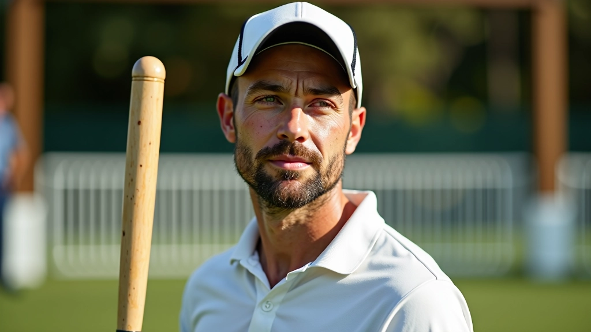
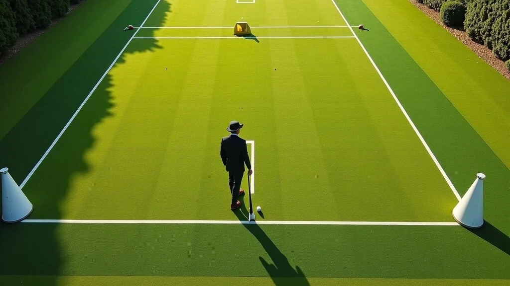
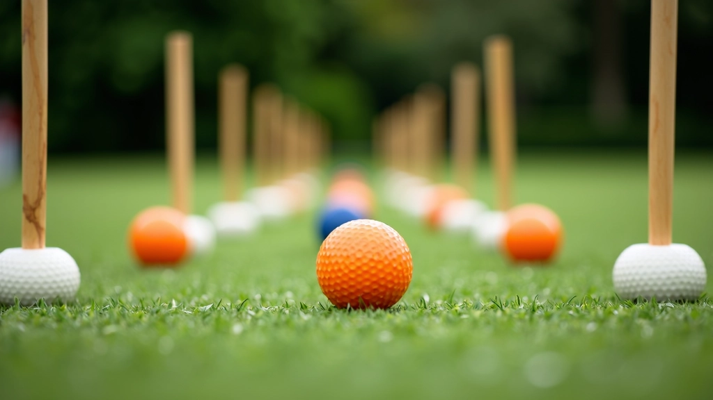
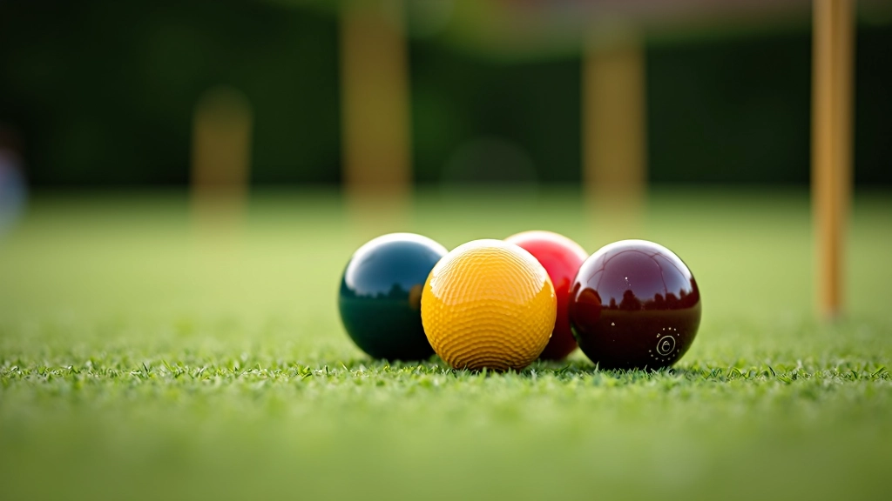

أساسيات ضربة الانقسام للمبتدئين
دليل شامل يغطي الخطوات الأساسية لإتقان ضربة الانقسام وتحسين دقتك في اللعب
اقرأ المزيدبرنامج تدريبي شامل يساعدك على تطوير مهاراتك من خلال تمارين يومية منظمة وفعالة

التطور في الكروكيه يأتي من التمرين المستمر والمنظم. ليس الأمر عن اللعب العشوائي، بل عن التركيز على مهارات محددة وتحسينها تدريجياً. نحن نعرف أن الكثيرين يريدون تحسين أدائهم لكن لا يعرفون من أين يبدأون.
هذا البرنامج يقدم لك تمارين حقيقية تستطيع تنفيذها بنفسك. كل تمرين مصمم بناءً على خبرة عملية لتطوير جوانب محددة من لعبتك. سواء كنت مبتدئاً أو لاعباً متقدماً، ستجد هنا ما يناسب مستواك.

أربع قواعد أساسية تحكم كل برنامج تدريبي ناجح
التدريب ثلاث مرات أسبوعياً أفضل من جلسة واحدة طويلة. عضلاتك تحتاج إلى وقت للتعافي وتثبيت المهارات بين الجلسات.
جودة التمرين أهم من كميته. ركز على الحركة الصحيحة حتى لو كنت تعيد التمرين عشرين مرة فقط بدلاً من مئة مرة.
ابدأ بالتمارين الأساسية ثم انتقل إلى الأصعب. هذا يبني أساساً قوياً ويمنع الإصابات.
راقب تقدمك وقيّم ما ينجح. إذا شعرت أن تمريناً معيناً لا يساعدك، لا تتردد في تغييره.
هذه المجموعة من التمارين مصممة لتحسين دقتك والتحكم بالكرة. كل تمرين يستهدف مهارة محددة ويستغرق حوالي 15 دقيقة.
ضع ست نقاط على الملعب على مسافات مختلفة: متر واحد، مترين، وثلاثة أمتار من الهدف. حاول إصابة الهدف من كل نقطة عشر مرات متتالية. هذا يعلمك التحكم بالقوة والدقة.
الملاحظة المهمة: ركز على استقرار قدميك أولاً. إذا كانت قاعدتك ثابتة، ستكون ضربتك أكثر دقة بكثير. معظم الأخطاء تأتي من عدم الاستقرار الكافي قبل الضربة.


ضع ثماني نقاط على شكل مسار معقد على الملعب. حاول الانتقال من نقطة إلى أخرى بضربات دقيقة. هذا يحاكي ما يحدث في المباريات الفعلية حيث تحتاج إلى تغيير الاتجاه والمسافة بسرعة.
ابدأ بمسار بسيط ثم أضف نقاطاً أكثر مع تحسن مستواك. سجل عدد الضربات التي تحتاجها لإكمال المسار. بعد أسبوعين ستلاحظ تحسناً واضحاً.
هذا التمرين بسيط لكن فعال جداً. ضع كرتين على بعد متر واحد من بعضهما. اضرب الكرة الأولى لتصطدم بالثانية، ثم اضرب الثانية للعودة إلى الأولى. حاول تكرار هذا عشرين مرة متتالية دون أخطاء.
هذا التمرين يطور تحكماً دقيقاً بقوة الضربة. ستشعر بفرق كبير في ثقتك بنفسك عندما تستطيع إكماله بنجاح. معظم لاعبي الكروكيه الجيدين يفعلون هذا التمرين قبل كل مباراة.


فريق التحرير والمحتوى
كتبه فريق ملعب الروكيه التحريري، متخصص في تقديم إرشادات عملية وموثوقة عن إتقان تقنيات الكروكيه.
اكتشف مقالات أخرى تساعدك على تطوير مهاراتك في الكروكيه
دليل شامل يغطي الخطوات الأساسية لإتقان ضربة الانقسام وتحسين دقتك في اللعب
اقرأ المزيد
اكتشف كيفية تنفيذ ضربة الروكيه بشكل صحيح وزيادة فرصك في الفوز بالنقاط
اقرأ المزيد
تعرف على الاستراتيجيات التي يستخدمها اللاعبون المحترفون لتحسين مستواك
اقرأ المزيدهذه المقالة توفر معلومات تعليمية حول تقنيات وتمارين الكروكيه. النتائج تختلف من شخص لآخر بناءً على المستوى الحالي والالتزام بالتدريب. ننصحك باستشارة مدرب متخصص إذا كنت تشعر بأي ألم أو عدم ارتياح أثناء التمارين. كل فرد لديه احتياجات مختلفة وقدرات جسدية مختلفة.
ابدأ بتطبيق هذه التمارين هذا الأسبوع. لا تحاول فعل كل شيء في يوم واحد. اختر تمريناً واحداً وركز عليه لمدة أسبوع كامل قبل إضافة تمرين جديد. التطور يحدث ببطء لكنه ثابت.
تذكر أن أفضل لاعبي الكروكيه في العالم لم يصبحوا محترفين بين عشية وضحاها. هم التزموا بالتدريب المنتظم والممل أحياناً. بعد شهرين من التمارين المنتظمة ستشعر بفرق حقيقي في أدائك. بعد ستة أشهر ستكون نسخة أفضل بكثير من نفسك.